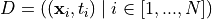
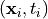
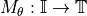
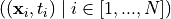
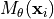

validating_models.checker module#
- class validating_models.checker.Checker(predict: function, dataset: validating_models.dataset.Dataset, use_gt=False)[source]#
Bases:
objectClass used to validate constraints against prediction results given a dataset or against the targets (ground truth) in the dataset given the dataset.
- predict#
Function representing the Model:

- Type
FunctionType
- dataset#
The dataset  with the samples 
- Parameters
predict (FunctionType, optional) – Function representing the Model: . Can be None if use_gt is set to True.
dataset (validating_models.dataset.Dataset) – The dataset with the samples ()
use_gt (bool, optional) – Whether to validate the constraints against the ground truth in the dataset.
- property predictions#
The predictions  made by predict over the samples of the dataset.
- Return type
numpy.ndarray
- explain_validation_results(constraint, task_example_indices=None, nodes=None, indices=None)[source]#
- pre_evaluate_expression(constraint: validating_models.constraint.Constraint) numpy.ndarray[source]#
- validate(constraints: List[validating_models.constraint.Constraint])[source]#
- get_constraint_validation_result(constraints, non_applicable_counts=False, df=False)[source]#
Gives the constraint validation results for a given set of constraints
- Parameters
constraints (list of
validating_models.constraint.Constraint) – The constraints to be validated.non_applicable_counts (bool, optional) – If set to true, a three-valued logic is used. Task-examples not satisfing the shape schema of the constraint can be differentiated from the ones satisfing the shape schema and the logical expression defined in the constraint. The first ones are marked as non_applicable and only the later ones are marked as valid. If set to false there is only valid or invalid. The constraints are treated as implication with the normal two-valued logic.
- Returns
The validation results.
- Return type
np.ndarry of shape (#instances, #constraints)
- get_valid_invalid_counts_for_indices(constraints: list, indices=None, non_applicable_counts=False)[source]#
Returns three counts for each constraint: the count of valid instances, the count of invalid instances and optionally the count of non applicable instances. The instances are choosen according to the given indices of the dataset.
- Parameters
constraints (list of
validating_models.constraint.Constraint) – The list of constraintsindices (list of int, optional) – The list of indices to select the instances of the dataset. None will select all instances in the dataset.
non_applicable_counts (bool, optional) – If set to true, a three-valued logic is used. Task-examples not satisfing the shape schema of the constraint can be differentiated from the ones satisfing the shape schema and the logical expression defined in the constraint. The first ones are marked as non_applicable and only the later ones are marked as valid. If set to false there is only valid or invalid. The constraints are treated as implication with the normal two-valued logic.
- Returns
the counts
- Return type
tuple (valid, invalid, non_applicable) - counts. Each count of shape (#constraints,).
- get_valid_invalid_counts_for_array_of_indices(constraints: list, array_of_indices: list, non_applicable_counts=False)[source]#
Returns three counts for each constraint and for each array of indices: the count of valid instances, the count of invalid instances and optionally the count of non applicable instances.
- Parameters
constraints (list of
validating_models.constraint.Constraint) – The list of constraintsindices (array of) – A list of lists of indices to select the instances of the dataset. Per list of indices the counts are returned.
non_applicable_counts (bool, optional) – If set to true, a three-valued logic is used. Task-examples not satisfing the shape schema of the constraint can be differentiated from the ones satisfing the shape schema and the logical expression defined in the constraint. The first ones are marked as non_applicable and only the later ones are marked as valid. If set to false there is only valid or invalid. The constraints are treated as implication with the normal two-valued logic.
- Returns
the counts
- Return type
tuple (valid, invalid, non_aplicable) - counts. Each count of shape (#lists, #constraints).
- get_validation_coverage(constraints: list, not_covered=True)[source]#
coverage: instances models constraints[i] < instances models constraints[i-1] < instances not models constraint[i] < instances not models constraint[i-1]
- class validating_models.checker.ConstantModelChecker(constant_prediction, dataset: validating_models.dataset.Dataset, use_gt=False)[source]#
- class validating_models.checker.DecisionNodeChecker(node, dataset: validating_models.dataset.Dataset, use_gt=False)[source]#